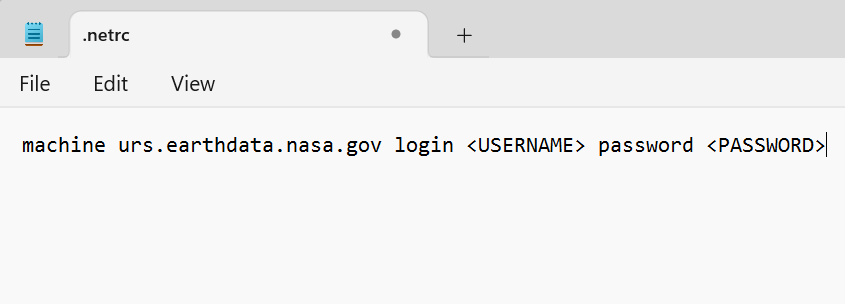

How to Set up a .netrc file for Authentication
There are several ways to set up a .netrc file in your home directory.
Manual set up
Download the .netrc template file and save it in your home/user/ directory, where user is your personal user directory. For example:
C:\Users\user\.netrcorhome/user/.netrc.- Open the
.netrcfile in a text editor and replacewith your NASA Earthdata Login username and with your NASA Earthdata Login password.
After editing, the file should look something like this:

Example .netrc 1 or you can also have everything on a single line separated by spaces, like:

example .netrc 2 - Open the
Create .netrc file from the Command Line
For Linux/MacOS:
To Create a .netrc file, enter the following in the command line, replacing
and with your NASA Earthdata username and password. This will create a file in your home directory or append your NASA credentials to an existing file. echo "machine urs.earthdata.nasa.gov login <USERNAME> password <PASSWORD>" >>~/.netrcFor Windows:
To Create a .netrc file, enter the following in the command line, replacing
and with your NASA Earthdata username and password. This will create a file in your home directory or append your NASA credentials to an existing file. echo machine urs.earthdata.nasa.gov login <USERNAME> password <PASSWORD> >> %userprofile%\.netrcYou can verify that the file is correct by opening with a text editor. It should look like an example in one of the figures above.
Programmatically:
Python
The
earthaccessPython library provides a convenient way to authenticate, search, and access NASA Earth science data using Python. It can be used to manage Earthdata Login and generate access tokens. Run the code below to create a.netrcfile in your home directory. You will be prompted to enter your Earthdata Login credentials.python import earthaccess earthaccess.login(persist=True)Instruction on how to install theearthaccesslibrary is provided here.R
The
earthdataloginR Package provides convenient authentication and access to NASA ‘EarthData’ products using R.edl_netrcfunction will create a.netrcfile using your Earthdata Login (EDL) credentials.r library(earthdatalogin) edl_netrc(username = Insert_Your_Username, password = Insert_Your_Password, netrc_path = '~/.netrc')More details can be found here.